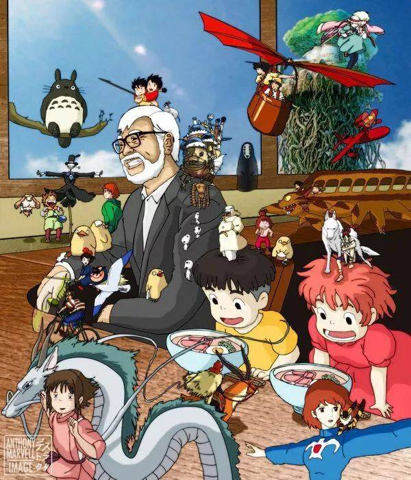
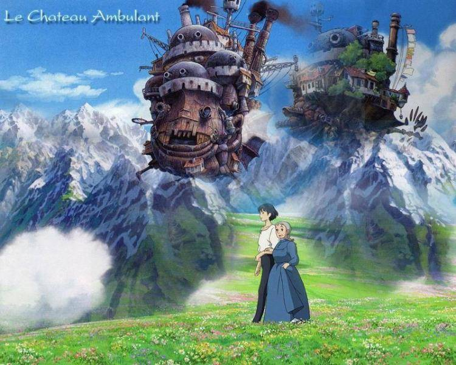
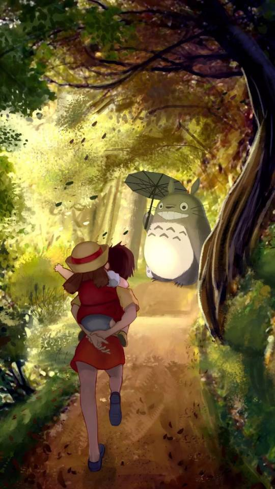
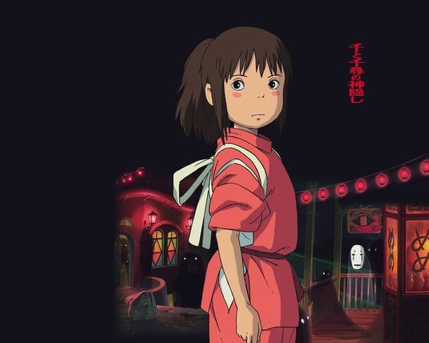

宫崎骏动画世界
宫崎骏：一位永无止境的漫画家

宫崎骏，出生于东京都文京区，毕业于日本东京学习院大学政治经济部，日本动画师、漫画家及动画导演，日本吉卜力工作室核心人物之一，现任吉卜力工作室董
事、德间纪念动画文化财团理事长、三鹰市立动画美术馆馆长。宫崎骏曾进入东映动画公司，从事动画师工作，后与高田勋、铃木敏夫共同创立吉卜力工作室，先后执
导了《天空之城》《幽灵公主》《千与千寻》《哈尔的移动城堡》等11部长篇动画电影，并获得第87届奥斯卡金像奖终身成就奖等奖项。
哈尔的移动城堡

影片改编自英国的儿童小说家黛安娜·W·琼斯的《魔法师哈威尔与火之恶魔》，描述住在小镇的三姐妹，其中的大姐苏菲是位制作帽子的专家，但她却因此得
罪了女巫，从18岁的美少女变成了90岁的老太婆的故事。这是一个魔法与科学同在的世界。在一个正面临战争的国家里，住着一名相貌平凡但心灵手巧的18岁少女索菲，
她在死去父亲所留下的帽子店里工作。一天，索菲在街上偶遇一个美貌的青年，他正是恶名远扬的魔法师哈尔，而索菲爱上了他。当晚，荒地的魔女突然来到索菲家，
对她下了诅咒把她变成了90岁的老婆婆。索菲离开了家，机缘巧合之下进入了哈尔的移动城堡，在那里充当勤杂工。通过与哈尔的朝夕相处，索菲渐渐了解到这个魔法
师不为人知的内心世界，而哈尔也在索菲的影响下开始改变。战火终于蔓延开了，哈尔投入了战斗，索菲按耐不住心中的担忧，驱动城堡冒险前往寻找哈尔……
龙猫

该片讲述了草壁达郎的妻子草壁靖子生病住院后，他带着两个女儿草壁皋月和草壁米，搬到草壁靖子所在疗养院附近的乡下居住的
故事。因为妈妈生病在乡下静养，暑假期间，小月和小梅姐妹俩跟随爸爸到乡下看望妈妈。有一天小梅独自在院子玩耍寻找橡树子的时候，意外的看到了憨憨的小龙猫。
小龙猫想甩掉小梅，却把小梅引到了正在睡觉的大大的龙猫身边，这让小月和小梅姐妹兴奋不已。有一天下雨的傍晚，小月姐妹等在爸爸下班回来的车站旁时，大龙猫
出现了，小月借给它一把伞，却被它当作非常有趣的玩具。龙猫把橡果子送给了小月和小梅，这令小月小梅非常开心。小月她们还看见了龙猫它们乘坐的猫巴士车。
夏天快过去的时候，小月和小梅收到医院的电报，妈妈身体不舒服，姐妹俩非常的担心妈妈的情况。小梅抱怨姐姐不管自己，姐姐怪小梅不懂事，小梅大哭着喊着姐姐
是个笨蛋跑远了。小月慌忙四处寻找小梅。天色将晚，小月想到向龙猫求助，龙猫帮小月唤来了猫巴士车，终于找到了迷路的小梅。之后，猫巴士车又带着姐妹俩来到
了妈妈的病房窗前。远远的看到一切平安的妈妈，姐妹俩不知道有多么快乐。小梅慌忙把迷路时摘的玉米送给了妈妈，希望她早日康复。
千与千寻

该片讲述了少女千寻意外来到神灵异世界后，为了救爸爸妈妈，经历了很多磨难的故事。该片荣获了柏林电影节金熊奖、奥斯卡金像奖最佳动画片等十多项日本
国内外大奖。有点娇气任性的10岁少女千寻跟随父母搬往新家，途中误入一座神庙，来到了另一个世界——一条专门给神仙提供服务的热闹非凡的浴场街。双亲因为吃
了给神准备的美食而被变成了猪。小千寻在迷之美少年白的帮助下得以安身，改名为“千”，进了魔女汤婆婆经营的大浴场做帮佣，等待机会救出父母回到自己的世界。
在这里有口恶心善的烧锅炉的爷爷，有性格爽利热心肠的玲大姐，在大家的激励下，千寻以自己的纯真之心屡屡化险为夷，并交到了许多新朋友。最终，千寻拯救了白，
发现了他的真实身份。然而要救出双亲，她还必须面临严酷的考验……